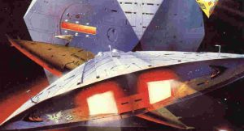
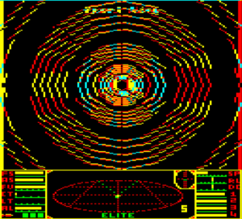
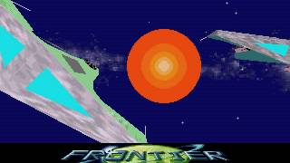

<section class="l-section"><div class="l-section-h i-cf"><p><strong>This is an archive of <a href="https://www.drewwagar.com/">Drew Wagar</a>&#8216;s lore guide, available here with his kind permission. Drew is no longer actively maintaining his lore pages, and they may not be accurate post v2.4 of Elite Dangerous.</strong></p>
<p>Hyperspace. Precisely how it works is something of a mystery, certainly by the time of Elite: Dangerous it appears to be part of the dual function ‘Frame Shift Drive’, operating in a mode which allows you to travel the, literally, astronomical distances between stars in just a few seconds.</p>
<p>But it wasn’t always thus in the Elite Dangerous universe.</p>
<p>Hyperspace was discovered in the 2200s. But it wasn’t until the 2800s that consumer ships began to take advantage of the technology in large numbers. Over the centuries hyperspace technology has been refined.</p>
<h3>Circa 2800 AD – Faraway Jump (Hyperspace Type 0)</h3>
<p><a ref="magnificPopup" href="https://canonn.science/wp-content/uploads/2017/10/the-dark-wheel.jpg"></a>The original hyperspace systems that were made commercially available were known as the ‘Faraway’ Jump systems. It took centuries for the complex series of monitoring satellites, branch lines, stop points, and rescue stations to be built using sublight technology along the major routes. Ultimately these hosted hundreds of channels, ‘lines’ for ships to travel through.</p>
<p>The ‘Faraway’ jump system was noted for its complexity in operation, requiring extensive pre-jump configuration by station based “Faraway Orientation Systems Controllers” (FOSC or SysCon). Hyperspacing ships required external help to initiate the jump. They were known for a certain sensitivity in operation, with the dangers of a misconfigured jump being listed as ‘atomic re-organisation’ and ‘time displacement’. Unsupervised jumps were extremely dangerous.</p>
<p>It was around this time that the phrase ‘witch-space’ entered the Commander’s lexicon. Its precise origin is uncertain, but it seems to stem from the risk inherent in the early hyperspace technology.</p>
<p>Witch-space referred to the ‘corridor’ or ‘transit tube’ through which the hyperspacing ship travelled during the jump. Many traders of the time believed that witch-space was ‘haunted’ – by “the ghosts of the early ships that went in to Faraway, and didn’t come out again.” Certainly a large number of ships never arrived at their destinations, their fate unknown even today.</p>
<p>It is worth noting that <a href="/article/drewwagar-the-thargoids">Thargoid</a> vessels were known to be able to ‘hover’ in witch-space, and ambush vessels in transit. Mis-jumps, due to poor calculations, were a constant worry for travelers in those times.</p>
<p>The system did have the advantage of a rapid transit time, the entire process taking mere seconds once the jump was successfully initiated. It was finally retired in 3122 and the complex support infrastructure was entirely decommissioned by 3125.</p>
<h3>3125 AD – Quirium (Hyperspace Type 1)</h3>
<p><a ref="magnificPopup" href="https://canonn.science/wp-content/uploads/2017/10/0208.png"></a>By the time of the original game hyperspace travel was ubiquitous, though the equipment was bulky and smaller ships were unable to host it, having to be carried through the jump by more capable ships.</p>
<p>The ‘Faraway’ system had been retired in favour of autonomous mechanisms that could be triggered aboard ship with no external assistance.</p>
<p>At the time, hyperspace jumps were limited to 7 lightyears in any particular direction, requiring multiple jumps for even relatively short hops between systems. The mechanism had its own unique fuelling system, independent from other ship’s systems.</p>
<p>Those original hyperdrives were powered by a fuel known as ‘Quirium’, a fuel that was unique to the Galactic Cooperative.</p>
<p>Unfortunately the secret formula for the manufacture of this high energy density material appears to have been lost in the collapse of the Galactic Cooperative and the Quirium hyperspace technology became obsolete as a result. Rumours abound that Quirium fuel was reverse engineered from captured Thargoid vessels.</p>
<p>Unusual modifications to these systems provided rapid transit to other parts of the galaxy, some even claimed they allowed you access completely separate galaxies. Little is now known about these so called ‘Galactic Hyperspace’ units, though they were reportedly expensive and in short supply.</p>
<p>The system was similar in operation to the Faraway jump drive, with an equivalent rapid transit time measured in seconds.</p>
<h3>3200 AD – Cloud (Hyperspace Type 2b)</h3>
<p><a ref="magnificPopup" href="https://canonn.science/wp-content/uploads/2017/10/mqdefault.jpg"></a>With the demise of the Quirium based hyperdrive technology and the collapse of the Galactic Cooperative, hyperspace capabilities regressed somewhat. The Federation and the Empire possessed inferior technology which, whilst certainly more reliable and less prone to ‘mis-jumps’, was noticeably more pedestrian in performance.</p>
<p>Fuelled by common hydrogen, these jump systems often took many days to transfer ships between two points, sometimes up to an entire week. Pilots, crew and passengers were fortunately able to take advantage of the ‘StarDreamer’ technology introduced in 3145 to remove the tedium of long term spaceflight. ‘StarDreamer’ compressed time from the perspective of an individual, by slowing their metabolism, giving them the impression that time was passing far more quickly than normal.</p>
<p>These hyperdrive mechanisms scaled to the size of vessel they supported, in some cases requiring many tonnes of shipboard space to be consumed during installation. Various sizes (or classes) of drive were available, but ship size still limited their installation. Jump range was proportional to the size of the drive and inversely proportional to the mass of the ship. Hyperdrives ranged in size from the class 1 at 6 tonnes, to the enormous class 8 at 600 tonnes.</p>
<p>Ships also needed large reserves of hydrogen fuel to power the drives. This could be stored in the conventional cargo space, rather than the specialist fuel tanks previously required.</p>
<p>A variation on these hyperdrives was the ‘Military drive’. This provided a vastly improved jump range per unit of installed equipment, but with two major downsides. 1. The equipment was very expensive and consumed a specialist ‘military fuel’ and 2. The fuelling process itself generated a by product in the form of radioactive waste that was costly to dispense with, though nefarious Commanders would dump the waste in uninhabited systems.</p>
<p>A major disadvantage to this Type 2b drive technology was that the ship involved in the jump would leave behind a conspicuously visible hyperspace ‘cloud’ at both the entry and exit point from hyperspace. With appropriate technology these ‘clouds’ could be analysed and the destination or arrival point inferred. This gave the opportunity for faster ships to arrive at the destination earlier and ambush the slower vessel as it arrived.</p>
<p>These type 2b hyperspace mechanisms did have one advantage over the previous types however, jump ranges were extendable by class of drive, far exceeding the 7 lightyear limit. Ships were able to travel dozens of lightyears in a single bound.</p>
<p>In rare cases it was noticed that these hyperdrive mechanisms were able to take advantage of strange undocumented wormholes in space. It has been reported that jumps of distances of over 655 lightyears were achieved by judicious plotting.</p>
<p>Research into better forms of hyperdrive technology were underway throughout this period. One event stands out as particularly poignant. The Antares was a starliner fitted with a prototype fast hyperspace drive. It launched on its maiden voyage in 3251, but was lost on its inaugural hyperspace jump and never heard from again and no wreckage has ever been found. The loss of the ship, the resultant investigations and the application of safety recommendations as a result, delayed the introduction of the current hyperspace technology for many years.</p>
<p>As an historical note, Sirius Corp claimed to have discovered the wreckage of the Antares in January 3302.</p>
<h3>3290 – Frame Shift Drive (Hyperspace Type 3)</h3>
<p><a ref="magnificPopup" href="https://canonn.science/wp-content/uploads/2017/10/hqdefault.jpg"></a>In the late 3290s a fast hyperspace mechanism was perfected that immediately made the Type 2b systems obsolete. Jump times were restored to mere seconds, but the advantages of longer range jumps retained. This was based on the, previously discredited, fast jump system developed for the ill-fated starship Antares. By 3300 virtually all of the type 2b drives had been decommissioned, with the loss of a number of ship classes that could not be retrofitted with the new systems due to design constraints.</p>
<p>These new drives required large quantities of the element Tantalum as a raw material in their manufacture, causing something of a ‘Tantalum rush’ in the closing years of the 33rd century. This precipitated a number of hostile land grabs in systems where Tantalum was discovered or known to exist, including the well documented <a href="http://www.drewwagar.com/elite-dangerous-saga/elitereclamation/">Reclamation of the Prism system</a> by <a href="http://www.drewwagar.com/progress-report/profile-senator-kahina-tijani-loren/">Lady Kahina Tijani Loren</a>.</p>
<p>Jump ranges greater than 50 lightyears are now possible, and transit times remain within mere seconds. The result is that the galaxy has been dramatically opened up to explorers at much lower cost than before. The Frontier has been pushed back, and systems that used to be on the fringes of civilisation have found themselves in the suburbs of the Core Worlds once again. Trips that were hitherto considered impossible have now been achieved in relatively modest vessels. Notable journeys have included visits to the Sagittarius A blackhole and crossings to the far side of the galaxy itself. This technology has caused significant upheaval in the Core Worlds and the major powers, as the tactical situation with respect to the ability to deploy ships has dramatically changed.</p>
<p>In recent years it has been discovered that the Frame Shift Drive can be significantly enhanced by the injection of rare materials – a technique provided by various ‘engineers’ located around the core worlds. They can also be ‘supercharged’ by entering close proximity to the fierce emissions of White Dwarf and Neutron stars. Many organisations are researching frame shift technology. One such company, Meta-Drive, was recently acquired by Sirius Corp after financial irregularities. It appears the type 3 technology still has considerable development potential ahead of it.</p>
<p>Even after all this time, hyperspace is still not well understood. The witch-space tunnel that is traversed still hosts inexplicable lights and structures within it. It seems hyperspace will hold its mysteries and allure for centuries to come. Perhaps witch-space really is haunted…</p>
</div></section>
